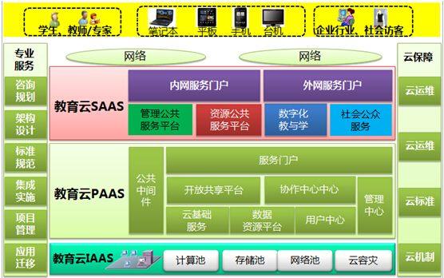

区域教育云解决方案
方案概述
教育管理信息化是《国家中长期教育改革和发展规划纲要 (2010-2020 年)》以及《教育信息化十年发展规划（2011-2020 年）》中确定的重要内容，是支撑教育管理现代化、促进教育改革发展的基础性工程。“三通两平台”建设是“十二五”期间的教育信息化建设的核心任务。“三通”指的是“宽带网络校校通、优质资源班班通、网络学习空间人人通”，“两平台”即：教育管理公共服务平台、教育资源公共服务平台。依据国家教育部、中央电教馆的指导精神，以实现“三通两平台”落地为目标，建设区域教育云，通过科学设计和整体规划，建设数据集中、系统集成的应用环境，整合各类教育信息资源和信息化基础设施，实现信息整合、业务聚合、服务融合的教育管理信息系统。实现教育主管部门、各学校、及社会各伙伴之间的系统互联和数据互通，全面提升教育信息化水平和公共服务水平。
方案架构
浪潮区域教育云解决方案基于浪潮教育云平台设计并实现，浪潮教育云平台按照云计算三层技术框架设计，包括：教育云基础平台层（IaaS）、教育云公共软件平台层（PaaS）、教育云应用软件平台层（SaaS）。
浪潮教育云平台基于云计算的开放、标准、可扩展的系统架构，能够实现平台容量扩容、应用嵌入整合。教育云平台按照通用标准五层架构建设，分别是云基础服务（IAAS），云平台服务（PAAS）、云应用服务（SAAS）、云保障及专业服务。
1.教育云基础平台层（IaaS）
实现各类软硬件资源“按需分配、共享最优”。利用云计算和虚拟化技术，整合多种资源，建立统一计算资源池、存储资源池、网络资源池，为不同用户、不同系统提供IaaS（计算和存储资源服务）。
2.教育云公共软件平台（PaaS）
提供全局统一基础性支撑服务，使各类应用系统能够有效的整合与协同，形成信息系统统一的公共支撑环境。构建了统一、开放的软件环境，提供标准化的应用接入方式。
3.教育云应用软件平台（SaaS）
构建在教育云基础平台（IaaS）和教育云公共软件平台（PaaS）之上，包括：教育管理公共服务平台、教育资源公共服务平台、数字化教与学平台及向社会公众提供的社会公众服务平台，通过教育云应用软件平台实现了管理系统与资源平台的整合，实现了“优质教学资源班班通”和“网络学习空间人人通”的落地。
4.云保障
包括云安全、云标准、云运维、云机制四个部分。根据应用的需要和科学布局，在区域进行建设部署，功能满足在各级行政管理单位的部署要求，通过网络和终端提供给各级用户使用。云安全：通过完善安全技术设施，健全安全规章制度，提升安全监管能力。云运维：不断强化云基础、云平台、云数据、云应用等运维工作。云标准：采用国际、国家和部门行业已发布的标准，申报制定新标准。云机制：进一步完善建设、采集、应用、共享、培训、考核和监督等工作规范。通过云安全、云运维、云标准、云机制建设，形成基础稳固、平台健壮、应用繁荣、安全可靠的云保障体系。
5.专业服务
基于浪潮在教育行业及其他行业的建设经验，为区域教育云平台建设提供架构设计、咨询规划、项目管理、教育标准规范的执行等服务。

方案价值
1.降低IT运营成本：浪潮区域教育云解决方案将非共享的专用IT孤岛转变为动态管理、集中、可共享的IT资产，提高资源利用率，并对资源进行重新部署，满足不断变化的业务需求和降低IT成本。2.提高服务质量，降低风险：浪潮区域教育云解决方案通过对制定的服务级别标准进行服务质量评估，提供最佳的使用体验，实现资源按需供应。同时，利用各种增强的安全特性，构建并维护IT 环境，使业务风险大大降低。3.加快实施IT变更的速度，提高业务灵活性：浪潮区域教育云解决方案可轻松评估变更需求，加速部署新产品和新服务的速度，更快地响应不断变化的业务环境与市场竞争环境，提高业务灵活性。4.推动业务增长：浪潮区域教育云解决方案借助自动化和更高效的管理流程，使释放宝贵资源用于服务创新，从而加速业务增长。